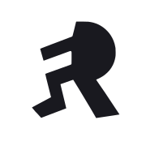

FinRate · проверка иконки · v1
C · Только manifest

В ней нет бликов, тени и градиента. Сравните её со значком на рабочем столе.
- В Safari нажмите «Поделиться» → «На экран “Домой”».
- Оставьте имя FR Test C. Включите «Открывать как веб-приложение», если этот переключатель показан.
- Нажмите «Добавить» и откройте новый значок. На экране должен быть заголовок «C · Только manifest».
Если открылся другой вариант, сообщите об этом — такое сравнение пока нельзя считать корректным.